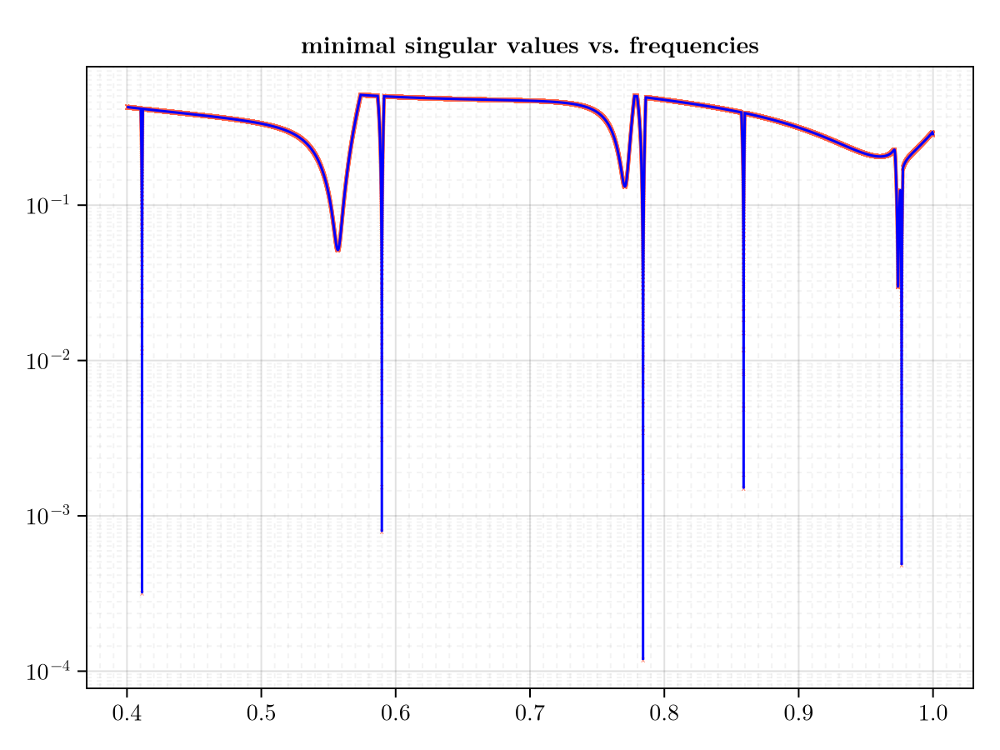
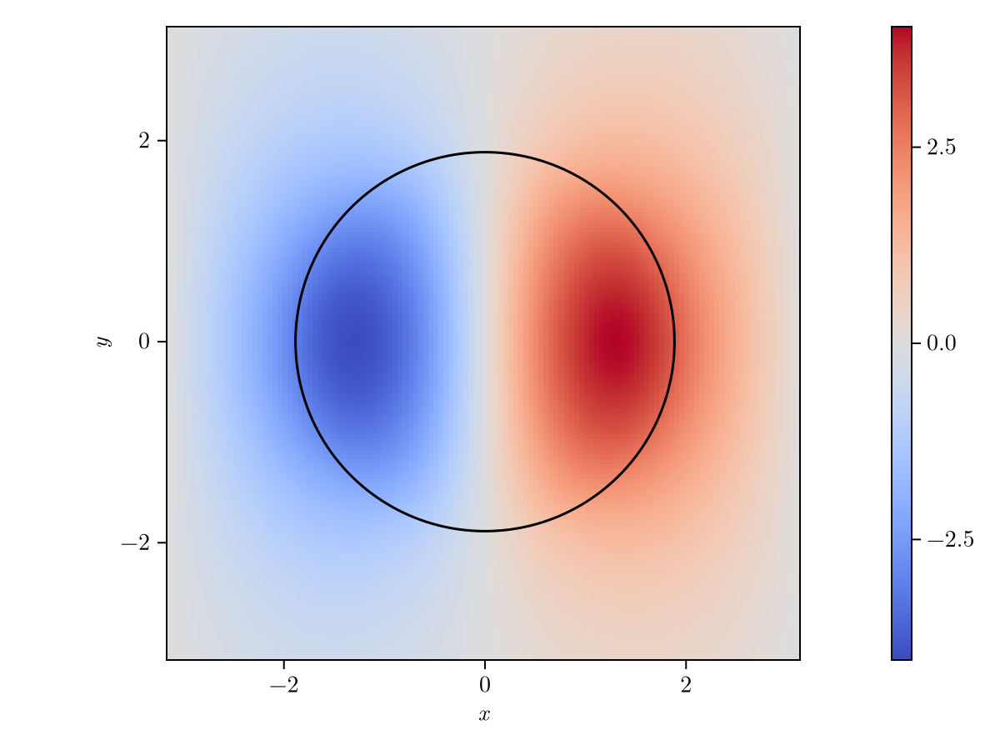

Standing waves for dielectric cylinders under TE polarization
Parameters
This example is from [3]
First we need to import needed packages
using BICsComusing CairoMakieusing LinearAlgebraThen we specify the parameters
n = 5inn = 11.6ext = 1.0hom = 1.0r = 0.3 * 2π1.8849555921538759We construct a empty for minimal singular values
msv = Float64[]Float64[]a square with period $2\pi$
sq = Square([0.0, 0.0], π)Square([0.0, 0.0], 3.141592653589793)generate sampling points along the boundary of the square
sp = get_samplingpoints(sq, n)SamplingPoints(5, [2.5132741228718345 1.2566370614359172 … 3.141592653589793 3.141592653589793; -3.141592653589793 -3.141592653589793 … -1.2566370614359172 -2.5132741228718345], [4.023201612868356 3.3835988392928105 … 3.3835988392928105 4.023201612868356; -0.8960553845713439 -1.1902899496825317 … -0.3805063771123649 -0.6747409422235527], [0.0 0.0 … 1.0 1.0; -1.0 -1.0 … 0.0 0.0])We sweep the frequency
ks = 0.4:1e-5:1.0for k in ks cydc = build_cylinder_cache(4n, k, r, inn, ext) coef = get_coeff(4n, cydc, inn, ext) bydc = build_boundary_cache(sp, 4n, k, ext) Λ, _ = assemble_dtn(sp, 4n, coef, bydc, k, ext) Δ = apply_bc(Λ, n) apply_tbc!(Δ, sp, k; homo = hom) s = svdvals(Δ) push!(msv, minimum(s))endWe plot all minimal singular values for all frequencies in ks
with_theme(theme_latexfonts()) do fig = Figure() axi = Axis(fig[1, 1], yscale = log10, xminorgridvisible = true, yminorgridvisible = true, xminorgridstyle = :dash, yminorgridstyle = :dash, xminorticks = IntervalsBetween(10), yminorticks = IntervalsBetween(20), title = "minimal singular values vs. frequencies") plot_min_svals!(axi, ks, msv) figend
Next we plot the fields of modes associated to BICs we computed above. For the BIC's frequency $k1 = 0.4112$,
k1 = 0.4112mf1 = compute_mode(sp, k1, r, inn, ext, hom)ModeField(0.4112, 11.6, 1.0, 1.8849555921538759, [-10, -9, -8, -7, -6, -5, -4, -3, -2, -1, 0, 1, 2, 3, 4, 5, 6, 7, 8, 9], [178867.29904463343 51569.50544473623 … 14798.154891751139 51569.50544473623; -3.615071077576328e-17 -7.66130912180924e-15 … -1.324492755372487e-12 -7.66130912180924e-15], ComplexF64[2.5137203665666138e-14 - 2.2198125976161424e-15im, 1.02110027479027 - 3.2751579226442118e-15im, -1.708808405265648e-15 - 2.3274257652080538e-15im, 0.2658405791529979 - 4.787836793695988e-16im, -1.2981259242463115e-16 + 5.45257572411485e-16im, 0.15131893249954118 - 4.440892098500626e-16im, -1.6809585109631229e-16 - 3.5510964800368254e-17im, 0.24008201397336298 - 8.040443311152501e-16im, -2.748206418344496e-16 + 1.4005669837204977e-16im, -3.5116221372766168 + 9.769962616701378e-15im, -4.770992024214765e-16 - 7.160452832102406e-16im, 3.5116221372766194 - 1.3627987627273797e-14im, -1.2690267517701007e-16 - 6.973732651056065e-17im, -0.2400820139733628 + 5.412337245047638e-16im, -6.513506841835946e-17 + 1.8042858808744986e-16im, -0.1513189324995418 + 1.1518563880486e-15im, 4.839972742774736e-17 - 1.6755730409290654e-16im, -0.26584057915299636 + 4.718447854656915e-16im, -1.3786871076153629e-15 - 4.739738789807683e-16im, -1.0211002747902853 + 1.7328344777188836e-14im])We compute the field on a grid xs times ys
xs = -π:0.05:πys = -π:0.05:πf1 = evaluate_field(mf1, xs, ys)with_theme(theme_latexfonts()) do fig2 = Figure() angles = range(0, 2π, length=200) xc = r .* cos.(angles) yc = r .* sin.(angles) axi2 = Axis(fig2[1, 1], aspect = 1, xlabel = L"$x$", ylabel = L"$y$") hm, _ = plot_field_mode!(axi2, xs, ys, real.(f1)) lines!(axi2, xc, yc, color = :black) Colorbar(fig2[1, 2], hm) fig2end
This page was generated using Literate.jl.